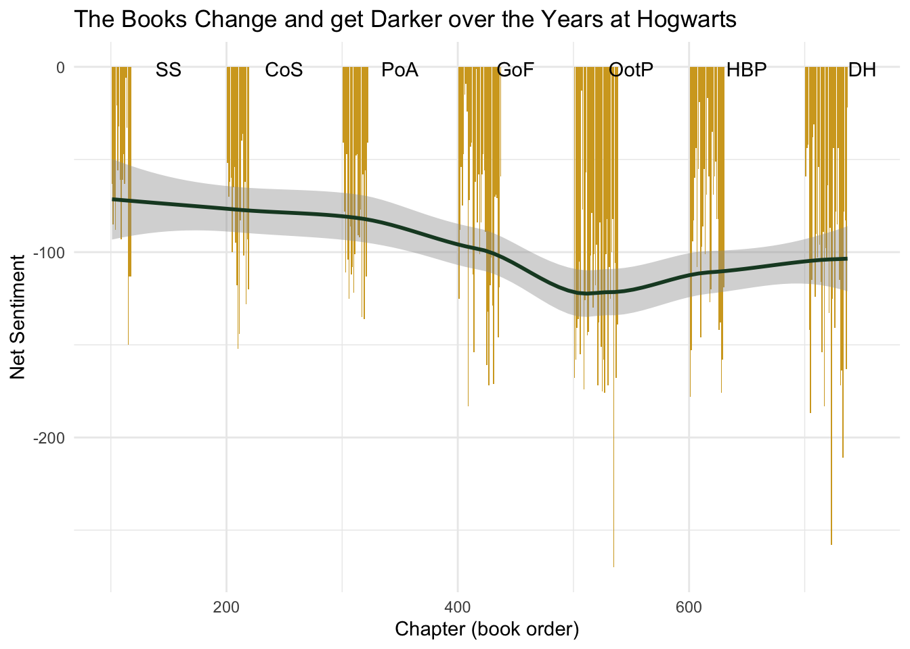
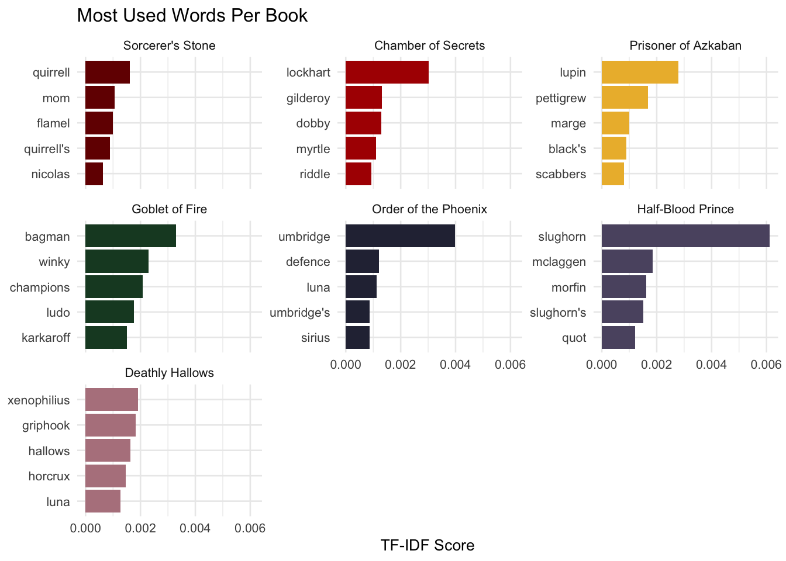

raw_text <- potter_untidy |>
mutate(text = str_to_lower(text))
# str_ function: 1 to turn all of the text lowercase to be consistent
voldemort_pattern <- "\\b(voldemort|tom riddle|he-who-must-not-be-named|you-know-who|the dark lord)\\b"
ron_pattern <- "\\b(ron|ronald)"
# Regular Expression 1: Different versions of Voldemort's and Ron's names where I used \b for word boundaries
key_chars <- tibble(
character = c(
"Harry",
"Ron (all names)",
"Hermione",
"Dumbledore",
"Voldemort (all names)"),
pattern = c("\\bharry\\b",
ron_pattern,
"\\bhermione\\b",
"\\bdumbledore\\b",
voldemort_pattern))
# Regular Expression 2: Here I used \b word boundary matching for the other characters
char_counts <- raw_text |>
group_by(title, book_num) |>
summarise(
text_combined = paste(text, collapse = " "),
.groups = "drop") |>
crossing(key_chars) |>
mutate(
count = str_count(text_combined, pattern),
total = str_count(text_combined, "\\b\\w+\\b"),
per_1000 = count / total * 1000)
# str_ function 2 to count the words with str_count, following the calculation to calculate character mentions every 1000 words
# Regular Expression 3: this matches any complete wordMini Project 1
Harry Potter Text Analysis
Accio Harry Potter data!
“It does not do to dwell on dreams and forget to live.” — Albus Dumbledore
The Harry Potter series by J.K. Rowling consists of seven books and many pages of storytelling where we can dive deep into a linguistic journey where we can explore how the series grows darker in tone, the change in character mentions, and we can see the words that are important to each book.
As the data is awaiting Harry, Ron, and Hermione at Hogwarts School for Witchcraft and Wizardry, it is time for them to depart The Burrow where they have spent their summer, and leave to take the Hogwarts Express from platform 9 3/4 to head back into another magical school year. After a long night riding the train and eating a delicious dinner, Harry went into a deep sleep where he had many dreams (none of which involved any data science), and the next morning after breakfast, Professor Roith is awaiting Harry and his friends in classroom 160R, where they will have their first data science class, after which they say: “data science is just like magic!” and Willemijn (one of their classmates) nods approvingly of this statement, and fully agrees with them. The harrypotter R package (Boehmke, 2016) gives the full text of all seven books as character vectors where every element represents a chapter. The potter_untidy CSV makes these into a tidy data frame with different columns for book number, chapter, and raw text. There are some other supporting files provided with things like character names, locations, and spells.
Part 1: Who Gets Named Most And How Does It Change?
String Manipulation and Regular Expressions
A question someone might have about the Harry Potter books leads as followed: “which characters are most present in each book?”. Normally I would obviously count every word, but since we are trying to teach Harry and his friends about data science, I will use regular expressions to match character names in their full context, and I also account for variation, since some characters are referred to by different names sometimes.
Highlighted expressions (commented in the code as well) - str_ function: 1 to turn all of the text lowercase to be consistent - str_ function 2 to count the words with str_count, following the calculation to calculate character mentions every 1000 words - str_ function 3 (later on in the project): str_length filters out short tokens (a, or) - Regular Expression 1: Different versions of Voldemort’s and Ron’s names where I used or word boundaries - Regular Expression 2: Here I used ord boundary matching for the other characters - Regular Expression 3: this matches any complete word
char_counts |>
ggplot(aes(
x = book_num,
y = per_1000,
color = character)) +
geom_line() +
geom_point(size = 2) +
scale_x_continuous(
breaks = 1:7,
labels = c("SS","CoS","PoA","GoF","OotP","HBP","DH")) +
scale_color_manual(values = c(
"Harry" = "#740001",
"Ron (all names)"= "#ae0001",
"Hermione" = "#d3a625",
"Dumbledore" = "#1a472a",
"Voldemort (all names)" = "#2b2d42")) +
labs(title = "Character Mentions in each Book",
subtitle = "Voldemort's and Ron's aliases combined",
x = "Book",
y = "Mentions per 1,000 words",
caption = "SS=Sorcerer's Stone · CoS=Chamber of Secrets · PoA=Prisoner of Azkaban\nGoF=Goblet of Fire · OotP=Order of the Phoenix · HBP=Half-Blood Prince · DH=Deathly Hallows") +
theme_minimal()![This is a line graph showing the frequency of five key characters mentioned across the 7 Harry Potter books, per 1000 words. On the x-axis, book titles are shown in order, and characters are shown in different coloured lines. On the y-axis, mentions per 1000 words is shown. Harry is the most named characted in every book, and all of the other characters stay quite consistent, but Voldemort's name seems to appear more in the later books. Dumbledore has a steep increase in the Half-Blood Prince book, with an immediate drop after, which makes sense because he dies in the sixth book. Ron is mentioned slightly more at the start of the series than at the end.](miniproject1_files/figure-html/unnamed-chunk-4-1.png)
This is a line graph showing the frequency of five key characters mentioned across the 7 Harry Potter books, per 1000 words. On the x-axis, book titles are shown in order, and characters are shown in different coloured lines. On the y-axis, mentions per 1000 words is shown. Harry is the most named characted in every book, and all of the other characters stay quite consistent, but Voldemort’s name seems to appear more in the later books. Dumbledore has a steep increase in the Half-Blood Prince book, with an immediate drop after, which makes sense because he dies in the sixth book. Ron is mentioned slightly more at the start of the series than at the end.
Part 2: Does the Tone get Darker / Change throughout the Books?
Bing Sentiments
Now that we have mapped the characters, Professor Roith seems to be interested in a harder question: how do the books feel?
bing_sentiments <- get_sentiments("bing")
hp_sentiments <- potter_tidy |>
anti_join(stop_words) |>
inner_join(bing_sentiments, relationship = "many-to-many") |>
count(title, book_num, chapter, sentiment) |>
pivot_wider(names_from = sentiment,
values_from = n,
values_fill = 0) |>
mutate(net_sentiment = positive - negative,
chapter_global = book_num * 100 + chapter) Joining with `by = join_by(word)`
Joining with `by = join_by(word)`ggplot(hp_sentiments,
aes(
x = chapter_global,
y = net_sentiment)) +
geom_col(fill = "#d3a625") +
geom_smooth(se = TRUE,
color = "#1a472a") +
annotate("text",
x = seq(150, 750, 100),
y = max(hp_sentiments$net_sentiment,
na.rm = TRUE),
label = c("SS", "CoS", "PoA", "GoF", "OotP", "HBP", "DH")) +
labs(title = "The Books Change and get Darker over the Years at Hogwarts",
x = "Chapter (book order)",
y = "Net Sentiment") +
theme_minimal()`geom_smooth()` using method = 'loess' and formula = 'y ~ x'
The chart that Professor Roith shows on the board next scares the class. Across all chapters in all of the 7 books, almost every chapter has a negative net sentiment, which means the bing lexicon consistently finds more dark words that joyful ones. Hermione points to the smoothing line: “even in the Sorcer’s Stone the overall tone is below zero, but the first book felt so happy!” The lowest dip seems to be around the Order of the Phoenix where Sirius falls through the veil and where Voldemort returns. From here on it gets slightly less negative for just a split second, before it. dips again through the Deathly Hallows as the war arrives.
Part 3: Special Words to Each Book
TF-IDF
potter_tfidf <- potter_tidy |>
filter(str_length(word) > 2) |>
# str_ function 3: str_length filters out short tokens (a, or)
anti_join(get_stopwords(source = "smart"),
by = "word") |>
count(title,
book_num,
word,
sort = TRUE) |>
bind_tf_idf(word, title, n) |>
group_by(title) |>
slice_max(tf_idf, n = 5) |>
ungroup()
potter_tfidf |>
mutate(word = reorder_within(word, tf_idf, title),
title = fct_reorder(title, book_num)) |>
ggplot(aes(
x = tf_idf,
y = word,
fill = factor(book_num))) +
geom_col(show.legend = FALSE) +
facet_wrap(~ title, scales = "free_y") +
scale_y_reordered() +
scale_fill_manual(values = c("#740001","#ae0001","#ecb939","#1a472a","#2b2d42","#5c5470","#b5838d")) +
labs(title = "Most Used Words Per Book",
x = "TF-IDF Score",
y = NULL) +
theme_minimal(base_size = 10)
Professor Roith flicks his wand and seven charts appear on the board. TF-IDF, he explains, finds the words that are uniquely important to each book by giving us the words that are used a lot in one book and appear a lot less in the other books. The charts explain this well, since in the first book, Quirrell is mentioned frequently, while someone like Dobby the house elf appears more often in the second book. It is not only names, but also words such as defense (book 5) and champions (book 4) are displayed.